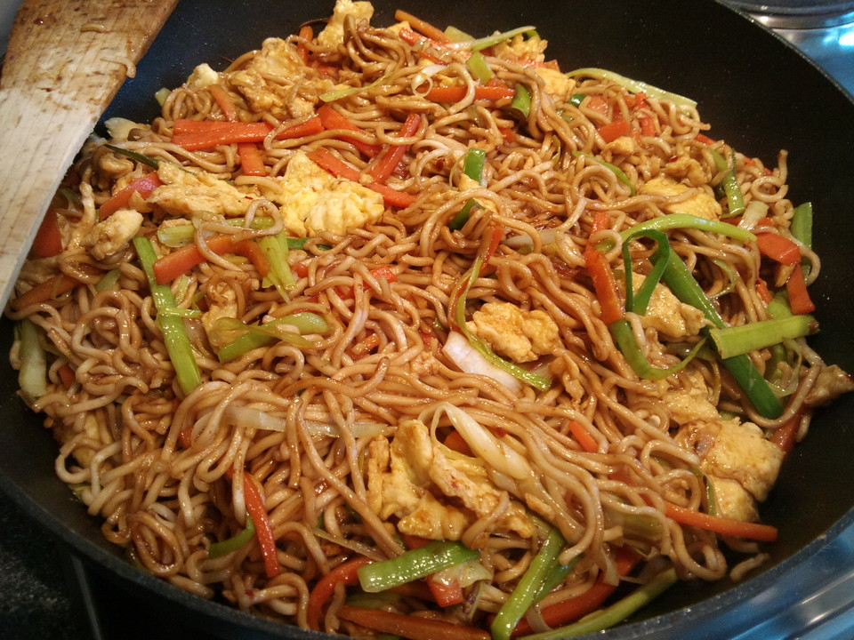
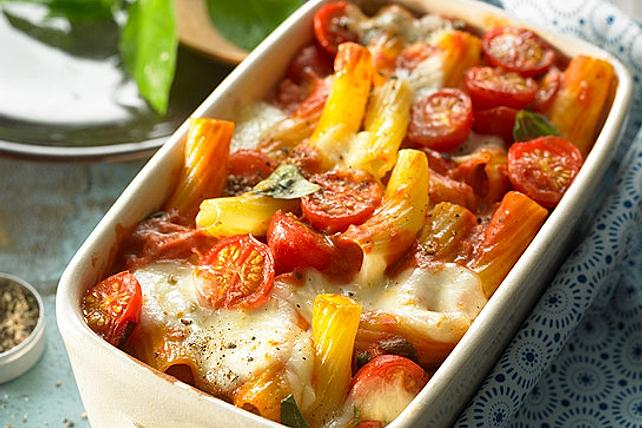

HERZHAFTE REZEPTIDEEN
Hier findest du die herzhaften Rezeptideen deiner Mitstudierenden in alphabetischer Reihenfolge.
Klick einfach auf den jeweiligen Buchstaben unten.
Viel Spaß beim Durchstöbern :)
P.S.: Falls du doch auf der falschen Seite gelandet bist, hier geht es zurück zur Startseite
G K N S
G
Gebratene Nudeln

| Zutaten | Dauer | Zubereitung |
|---|---|---|
|
20 Minuten |
Mi-Nudeln im Topf für 3 Minuten kochen und dann in einen Sieb abgießen. Tofu in kleine Würfel schneiden und in Öl im selben Topf anbraten. Champignons in dünne Scheiben schneiden und zum Tofu dazu geben. 2 Minuten braten. Mit einem kräftigen Schuss Teriyaki-Sauce und Sojasauce ablöschen. Köcheln lassen. Karotte, Zucchini und Paprika in dünne, lange Scheiben schneiden und in den Topf geben. Bei geschlossenem Deckel köcheln lassen, bis das Gemüse weicher geworden ist. Mit Gemüsebrühe, scharfer Paprika und Pfeffer würzen. Einen kleinen Schuss Sesamöl und Zitronensaft hinzugeben. Mi-Nudeln aus Sieb in den Topf geben und unterheben. Frühlingszwiebeln in Ringe schneiden und hinzugeben. Und fertig! Tipp: Mit Sesam oder gemahlenen Erdnüssen verfeinern! |
K
Käsetoast
| Zutaten | Dauer | Zubereitung |
|---|---|---|
|
5 Minuten |
Zuerst das Toastbrot auf beiden Seiten mit Margarine beschmieren. Dann mit Käse belegen und zuklappen. Als letztes im Sandwich-Maker schön goldbraun werden lassen :) |
N
Nudelauflauf

| Zutaten | Dauer | Zubereitung |
|---|---|---|
|
30 Minuten |
Den Ofen auf 200 °C Ober-/Unterhitze (Umluft 180 °C) vorheizen. Die Zwiebel und den Knoblauch sehr fein schneiden. Die Chilischote entkernen und ebenso fein hacken. Die Kirschtomaten waschen und halbieren. Den Parmesan reiben und den Mozzarella grob würfeln. Die Basilikumblätter abzupfen, waschen und trocken tupfen. In einem großen Topf Salzwasser zum Kochen bringen und die Nudeln darin laut Packungsangabe al dente garen. Währenddessen in einer großen Pfanne Olivenöl erhitzen und Zwiebel, Knoblauch und Chilischote darin anschwitzen. Die passierten Tomaten hinzufügen und die Sauce ein paar Minuten leicht köcheln lassen. Dann die Sahne und den geriebenen Parmesan unterrühren und die Sauce mit Salz, Pfeffer und einer ordentlichen Prise Zucker abschmecken. Wenn die Nudeln so weit sind, diese abgießen und in die Pfanne zur Sauce geben. Die Pfanne von der Hitze nehmen und die halbierten Kirschtomaten und die Hälfte der Mozzarellawürfel unterheben. Die Basilikumblätter in Streifen schneiden und ebenfalls unterheben. Alles zusammen in eine Auflaufform geben, mit dem restlichen Mozzarella bestreuen und ca. 20 Minuten auf der mittleren Schiene im heißen Backofen gratinieren. Dazu passt zum Beispiel ein grüner Salat und Knoblauchbaguette. |
S
Sucuklu Yumurta
| Zutaten | Dauer | Zubereitung |
|---|---|---|
|
5 Minuten |
Zuerst die türkische Knoblauchwurst in Scheiben schneide. Diese dann in der Pfanne anbraten, optional kann noch Butter zum Anbraten genutzt werden. Nachdem die Knoblauchwurst von beiden Seiten ausreichend angebraten wurde, fügen wir die Eier hinzu. Als letztes geben wir noch Salz hinzu und vermengen alles :) |